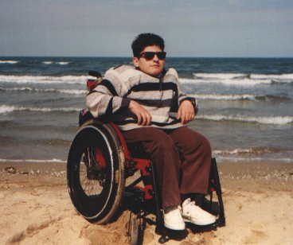

AVVENTURE E DISAVVENTURE DI GP
Sono Gp, un ragazzo disabile di Castelmaggiore. Il giorno 7 maggio 1999 sono partito con la mia classe diretti a Rimini ; ah ... dimenticavo, questa era una gita d'istruzione! Arrivati alla stazione di Bologna C.le, saliti sul treno che ci doveva portare per l'appunto a Rimini, ci siamo accorti che le porte, che consentivano l'accesso agli scompartimenti, non permettevano il passaggio della mia carrozzina. A quel punto, dopo alcuni tentativi, tutti andati a vuoto sono stato costretto a rimanere nella piattaforma antistante gli scompartimenti, senza poter trascorrere il viaggio insieme ai miei "cari compagni" : provate un po' voi a immaginare come mi sono sentito! Fortunatamente, alcuni my friends non mi hanno lasciato solo e ogni tanto qualcuno di loro veniva a trovarmi. Come se non bastasse, al momento dell'arrivo, per un incomprensibile disguido delle ferrovie, mancava il carrello elevatore. Così, grazie all'aiuto dei miei insegnanti e di un ferroviere, sono riuscito a scendere dal treno. Dopo aver visitato i monumenti di Rimini, senza incontrare ostacoli, ho voluto provare ad usare per la prima volta l'autobus di linea, grazie all'aiuto del mio accompagnatore. I gradini impedivano la mia salita autonoma sull'autobus ma grazie all'aiuto di tutti sono riuscito a salire e a scendere. A questo punto, per soddisfare le mie esigenze, mi sono appoggiato all'Istituto Alberghiero di Viale Regina Margherita, che aveva i servizi attrezzati e che si trovava, guarda caso, non molto distante dal ristorante dove abbiamo pranzato. Dopo pranzo, sono riuscito a raggiungere la spiaggia grazie ad una passerella-scivolo. Per eseguire gli esercizi di orienteering, ho avuto difficoltà nei momenti in cui dovevo prendere appunti perchè il fondo stradale era costituito di sampietrini che mi facevano barcollare la carrozzina. Per quanto riguarda il nostro ritorno, non c'è stato alcun problema perchè, arrivati sul binario, abbiamo incontrato il carrello elevatore che ci attendeva.
